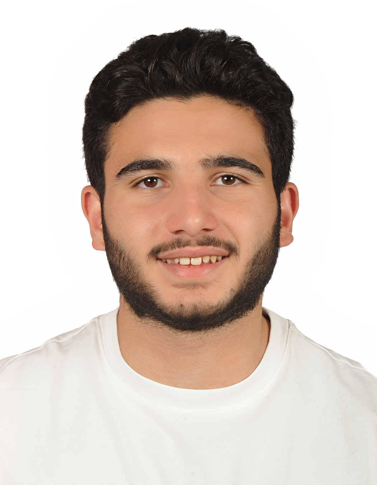

“I don't understand it.”
We break difficult concepts into clear, manageable steps so students can see how everything connects.
PERSONALIZED ACADEMIC SUPPORT
Personalized tutoring designed around every student's goals — from building strong foundations to mastering advanced coursework.

WHY AMIRO
Amiro was created by two students who have experienced the challenge of learning difficult material firsthand — and who believe tutoring should feel personal, supportive, and encouraging.
We don't want students to simply get through an assignment. We want them to understand what they're learning, feel comfortable asking questions, and leave a session feeling more capable than when they started.
WHY AMIRO
When a subject feels overwhelming, the right support can make all the difference.
We break difficult concepts into clear, manageable steps so students can see how everything connects.
We help students develop study strategies that fit the way they learn and the demands of their classes.
We create a focused plan around the student's goals and help them build confidence along the way.
Amiro isn't about giving students more work.
It's about helping them understand the work they're already doing.
MEET THE FOUNDERS
Our backgrounds are different, but our approach starts in the same place: understanding the student.
Biology student at UC Santa Barbara
Ameer is a third-year Biology student at UC Santa Barbara with a passion for science, learning, and helping students understand challenging concepts rather than simply memorize them.
Through two years with SciTrek, Ameer has worked as a volunteer, led volunteer groups, supported classroom instruction, and served as an Assessment Coordinator responsible for assessments, grading, and volunteer orientations. He especially enjoys finding the explanation that finally makes a difficult concept click for a student.
English student at Western Sydney University
Audria is a second-year English student at Western Sydney University who hopes to become a primary school teacher. She has a natural ability to make younger students feel comfortable, supported, and excited to learn.
Through her experience with children, babysitting, and customer-facing work, Audria has developed strong communication skills and a warm, approachable teaching style. She focuses on making learning enjoyable while helping students build confidence in the skills they use every day.
THE AMIRO APPROACH
Every student learns differently. Our job is to understand where they are and build from there.
Learn where the student is starting, what feels difficult, and what they want to accomplish.
Build a focused approach around the student's goals, current coursework, and learning style.
Break challenging material into explanations, examples, and steps that actually make sense.
Build confidence and stronger habits so students can become more independent over time.
TUTORING PROGRAMS
Our programs are organized around the subjects and age groups we are most comfortable supporting.
Friendly, patient support for younger students as they build the skills they'll use throughout school.
Help with the growing academic demands of middle school, with an emphasis on understanding and confidence.
STEM-focused support for students preparing for exams, strengthening foundations, or working through difficult coursework.
Focused support in the college subjects where Amiro has the strongest subject expertise.
WHO WE'RE HERE FOR
Students don't have to wait until they're struggling to ask for help. Amiro can support students who want to catch up, stay on track, prepare for an exam, or simply feel more confident in class.
Tell us what your student needs →HOW IT WORKS
We start by learning about the student, then build the right support around them.
Share their grade, subjects, challenges, goals, and preferred format.
We'll talk through what they need and determine which tutor and approach fit best.
Begin personalized sessions and work toward meaningful, measurable progress.
WHAT SUCCESS LOOKS LIKE
Better grades matter, but so does the moment a student stops feeling stuck. We want students to leave tutoring with more understanding, more confidence, and a clearer idea of how to approach the next challenge.
FAQ
Our current focus is elementary and middle-school academic support, high-school STEM, English and writing, and college general and organic chemistry. We'll always confirm that a subject is a good fit before starting.
We primarily tutor online. Limited in-person tutoring may be available depending on the student's location and tutor availability.
Session length can be tailored to the student's age, goals, and needs. We'll discuss the best format during the consultation.
Yes. Exam preparation can be built into a student's tutoring plan, including review, practice, and study strategy.
Yes. Audria primarily works with elementary and middle-school students, while Ameer also provides STEM and math support for younger students.
Send us a little information about the student and what they're looking for. We'll follow up to learn more and discuss the best next step.
READY TO GET STARTED?
Tell us a little about what your student needs. We'll take it from there.
Book a Free Consultation → Prefer email? Reach us at info@amirotutoring.comAmeer (United States): +1 (818) 877-3665
Audria (Australia): +61 435 046 510